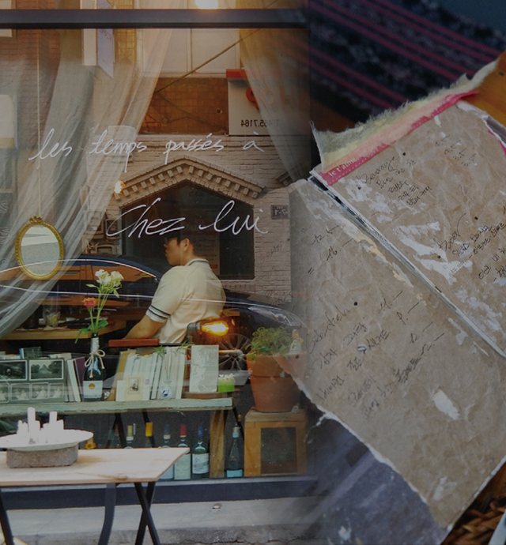
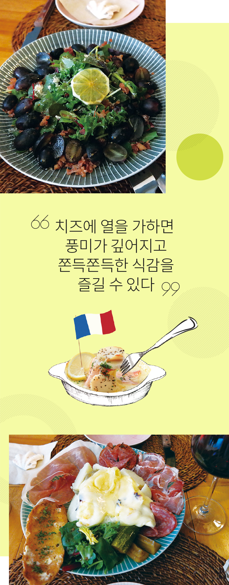
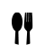
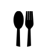

와 제 롤모델이 잡스에요!!! 아이폰 첫 출시되고 나서부터 계속 아이폰 쓰고 있는데 잡스가 너무 그리워요ㅠㅠ 지금은 돈만 벌려고 하는 것 같아서 디자인 발전도 없고ㅠㅠ와 제 롤모델이 잡스에요!!! 아이폰 첫 출시되고 나서부터 계속 아이폰 쓰고 있는데 잡스가 너무 그리워요ㅠㅠ 지금은 돈만 벌려고 하는 것 같아서 디자인 발전도 없고ㅠㅠ와 제 롤모델이 잡스에요!!! 아이폰 첫 출시되고 나서부터 계속 아이폰 쓰고 있는데 잡스가 너무 그리워요ㅠㅠ 지금은 돈만 벌려고 하는 것 같아서 디자인 발전도 없고ㅠㅠ와 제 롤모델이 잡스에요!!! 아이폰 첫 출시되고 나서부터 계속 아이폰 쓰고 있는데 잡스가 너무 그리워요ㅠㅠ 지금은 돈만 벌려고 하는 것 같아서 디자인 발전도 없고ㅠㅠ와 제 롤모델이 잡스에요!!! 아이폰 첫 출시되고 나서부터 계속 아이폰 쓰고 있는데 잡스가 너무 그리워요ㅠㅠ 지금은 돈만 벌려고 하는 것 같아서 디자인 발전도 없고ㅠㅠ
먹스타 맛집
현상인이 소개하는 부산 중앙동 맛집
프랑스 가정식 레스토랑
‘쉐리(Chez Lui)’
‘쉐리(Chez Lui)’
맛집 블로거, 먹스타그래머로 알려진 현상인들이 직접 맛집을 소개한다.
먹스타 맛집

현상인이 소개하는 부산 중앙동 맛집
프랑스 가정식
레스토랑
‘쉐리(Chez Lui)’
레스토랑
‘쉐리(Chez Lui)’
맛집 블로거, 먹스타그래머로 알려진 현상인들이 직접 맛집을 소개한다.
사무실 밀집 지역인 부산 중앙동에서 근무하고 있다면 누구나 알 것이다. 이 주변에서는 서양식 레스토랑 찾기가 ‘하늘의 별따기’만큼 어렵고, 프랑스 요리와는 더욱 거리가 멀다는 것을. 이번 달은 부산운영팀 조은진 사원이 프랑스 가정식 요리를 맛볼 수 있는 그곳, 부산 중앙동에 위치한 ‘쉐리’를 소개한다.
글
조은진 사원 (부산운영팀)
아는 사람만 아는 맛집!
프랑스 가정식 레스토랑 ‘쉐리’는 부산시 중구 중앙동 인쇄 골목길에 자리하고 있다. 점심에는 운영하지 않는 데다 간판이 없어 낮에 그 앞을 지난다면 레스토랑이라는 것을 짐작하지 못할 것이다. 검색을 하면 위치 정보만 나올 뿐 연락처는 없다. ‘쉐리’는 소규모 레스토랑이기 때문에 문자로만 예약을 받고 있다고 하는데, 필자는 회사 근처라 직접 방문하여 예약하곤 한다. 그만큼 ‘쉐리’는 어려운 레스토랑이다. SNS(인스타그램)에 이 레스토랑을 검색하면 많은 사진과 글이 업로드되어 있어 한마디로 ‘아는 사람만 아는 유명한 맛집’이라고 할 수 있다.
‘쉐리’에는 메인 요리로 ‘하클렛’이 있고 사이드 메뉴로 감자 그라탕과 샐러드, 크레페 등이 있다. 이중 ‘하클렛’은 프랑스 요리로, 감자와 고구마, 베이컨, 햄, 채소 등을 접시에 올린 뒤 하클렛 치즈를 녹여 그 자리에서 직접 올려주는 요리이다.
‘하클렛’은 라클렛이라고도 하는데, 프랑스어로 ‘긁어내다’란 뜻의 라클레르에서 유래했다.
하클렛 치즈에 열을 가하면 풍미가 깊어지고 쫀득득쫀득한 식감을 즐길 수 있는 것이 특징이다. 이 요리를 먹을 때에는 치즈가 올려진 감자와 베이컨 반 조각, 채소를 곁들여 먹는 것을 추천한다. 따로 먹을 때와 다르게 3단으로 겹쳐 먹을 때 전혀 다른 맛을 낸다. 샐러드 또한 싱싱한 과일과 채소로 어우러져 있는데, 하클렛과 샐러드는 와인을 부르는 조합이니 꼭 와인과 함께 먹을 것을 추천한다.

소소하지만 확실한 행복을 찾아서
메인 요리도 좋지만 ‘쉐리’의 또 다른 매력. 비록 세 테이블만 있는 작은 레스토랑이지만, 곳곳에 놓여있는 자그마한 소품과 책들이 눈을 사로잡고, 잔잔하게 흘러나오는 클래식과 팝송이 귀를 즐겁게 만든다. 사장님 한 분이 직접 주문을 받고 요리하기 때문에 모두들 기다림이 길 것이라 예상하지만, 자리에 앉아 레스토랑 안을 살피고 잔잔한 음악을 감상하다 보면 금세 주문한 음식이 나온다. 그렇게 테이블에 앉아 음악을 감상하며 음식을 천천히 먹다 보면 문득 소소하지만 진정한 행복이라는 ‘소확행’ 단어가 단번에 떠오른다.
특별한 음식과 더불어 감각적인 소품들까지 입과 눈과 귀를 즐겁게 하는 ‘쉐리’. 친절하게 손님을 맞아주고 주문과 서빙 등 1인 다(多)역을 해내는 사장님은 식사가 끝난 뒤 문 밖으로 나와 배웅을 하는 일도 잊지 않는다. 그야말로 ‘쉐리’는 마음 따뜻해지는 공간이다. 지루한 일상 속에서 소확행을 느끼고 싶다면 ‘쉐리’를 추천한다.
Info
-
 하클렛 ￦12,500, 감자 그라탕 ￦11,000, 베이컨&포도 샐러드 ￦9,000
-
부산광역시 중구 동광길 10
-
월~토 16:00~22:00 (토요일 예약 필수)
-
010-5816-1019 (문자로 예약 가능)
-
최고예요
322
-
좋아요
322
-
슬퍼요
322
-
그저 그래요
322
-
화나요
322